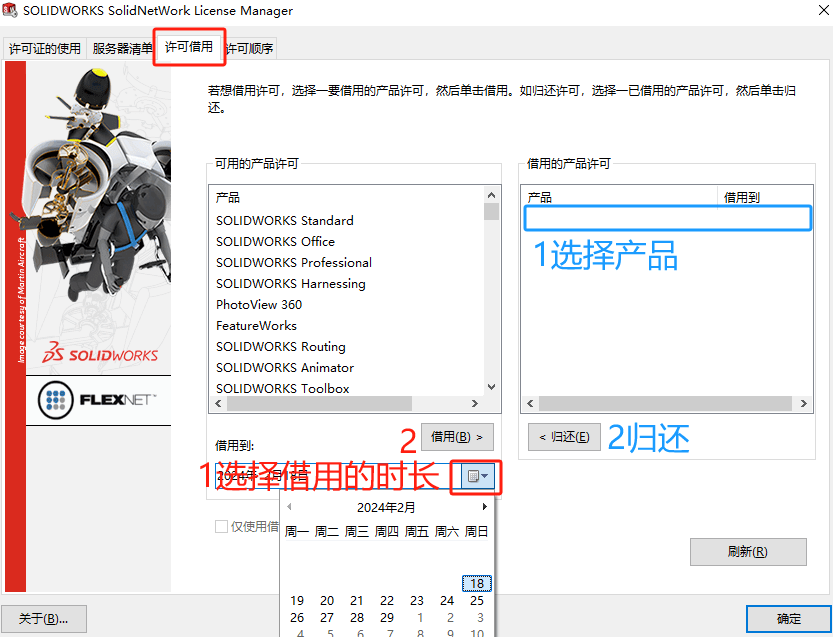
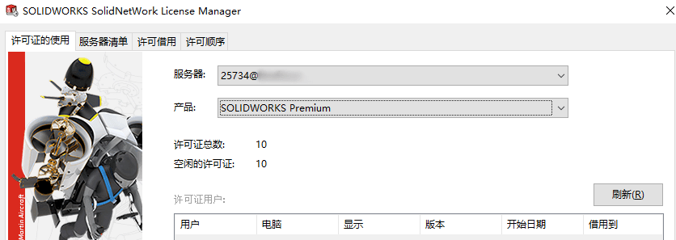
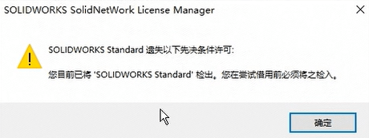
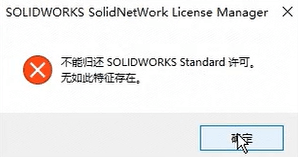
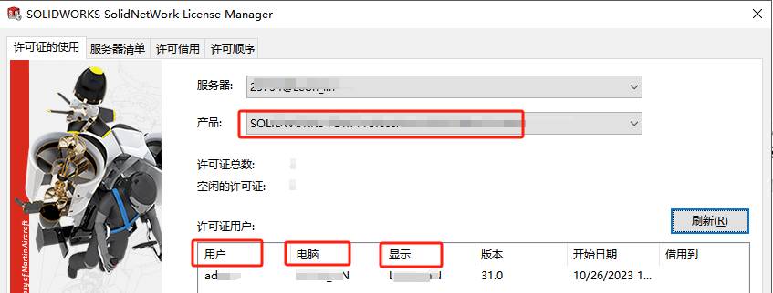

许可借出和归还
无论是服务器还是客户端，你都需要学会打开这个SOLIDWORKS服务器程序（或客户端程序）进行问题排查。打开【开始/菜单-solidworks工具-solidnetworks license manage client】
客户端：SolidNetWork License Manager Client 20xx
服务端：SolidNetWork License Manager Server 20xx

在许可借用里选择借用时长，选择借用的产品即可（参考红字操作）。归还的话参考蓝字操作

问题
无法借用
借用许可证时发生错误“无法借用许可证。 没有可供借用的许可证 (-67, 147, 0)”? 在以下情况下会发生此错误：
1、无空闲许可：检查客户端许可程序，检查“许可的使用”是否正常有空闲许可证。如果许可证总数为0，则需检查“服务器”的连接问题。

2、许可文件限制：管理员在选项文件中设置了选项 BORROW_LOWWATER。 请参见 licensingenduserguide.pdf 了解更多信息。
无法借出2
您目前已将”SOLIDWORKS Standard’检出。您在尝试借用前必须将之检入。
方法：关闭SOLIDWORKS 程序（或对应产品的程序），保证当前是没有检出的许可借用状态，再去借出许可。

无法归还
在客户端机器上，将“借用”文件夹添加到注册表中，
1 | HKEY_CURRENT_USER/Software/Flexlm License Manager/ |
用户不能删除或编辑此文件夹。如果发生这种情况，他们将无法将许可证“返回”给服务器，必须等待借用期到期才能再次使用许可证。

既然信息是填入到“HKEY_CURRENT_USER”里的，也就意味着许可是跟着用户走的，而不是电脑。这会出现同一电脑不同用户登录时，无法使用其他用户借用来的许可。
强制归还
重命名注册表Borrow位置，
1 | HKEY_CURRENT_USER\Software\FLEXlm License Manager\Borrow |
再删除客户端“C:\ProgramData\FLEXnet”文件夹后，许可会重置并归还。
强制归还2
A1、请确保客户端已经完全退出，在“任务管理器”，将 SOLIDWORKS 结束进程
A2、若已退出，用户还在服务器上挂着，请在服务器上尝试以下操作，踢出已退出用户；
确保是 SOLIDWORKS 2020 SP5 及后的版本； 在服务器上使用 CD 命令，将目录指定到 license file 路径，一般目录如下：再运行
1 | cd C:\Program Files (x86)\SOLIDWORKS SolidNetWork License Manager\utils |

注：后几者可在许可管理器-许可证的使用中查看。（若其它电脑远程， 显示那项有所不同， 不是被查询的客户端机器名）
没有借用信息
如果客户端计算机借用 SOLIDWORKS产品，但许可并未出现在 SolidNetWork License (SNL) Manager 的“借用的产品许可”列表中，该怎么办？
方法：
您可以通过在 Windows 注册表中重命名“FLEXlm License Manager”文件夹来解决此问题。请执行下列步骤：
1.关闭 SolidNetWork License (SNL) Manager。
2.打开 Windows 注册表编辑器。
3.浏览至以下注册表位置：
1 | HKEY_CURRENT_USER\Software\FLEXlm License Manager\Borrow |
4.确认有一个注册表项显示借用的产品。
5.将“FLEXlm License Manager”注册表文件夹重命名为类似“FLEXlm License Manager_old”的文件夹。
6.打开 SNL Manager。确认没有任何更改，然后关闭 SNL Manager。
7.返回到注册表编辑器，并将注册表文件夹名称恢复为“FLEXlm License Manager”。
8.打开 SNL Manager > 单击“许可借用”选项卡。借用的产品现在显示在“借用的产品许可”区域中。